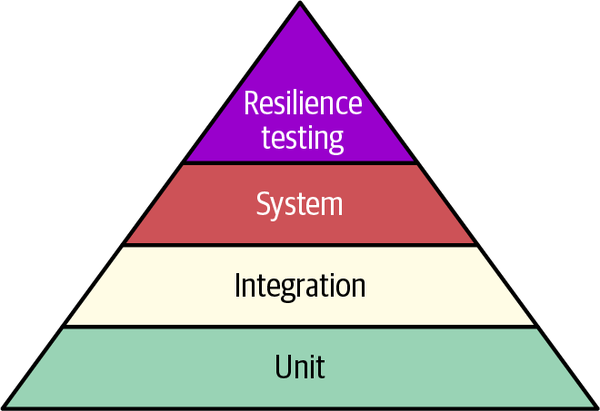
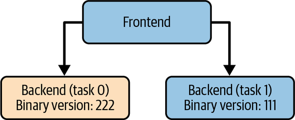
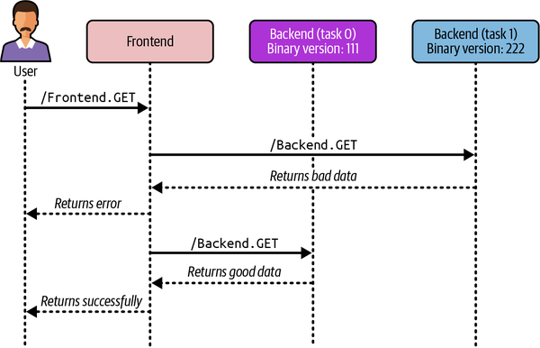

In 1882, Benjamin Brewster wrote in a Yale student magazine: “In theory, theory and practice are the same; in practice, they are not.” This is as good a one-sentence summary of why testing exists as there is. It is also a clue about why testing is more important than ever in today’s era of massive distributed systems, complex production environments, and rapidly expanding deployment of AI-authored or AI-related software, none of which would be possible without it.
You’ve probably mostly encountered testing in the context of the software development lifecycle (SDLC), where it’s the phase before deployment and, as a result, before the new software gets put in front of users. This traditional role of testing is probably still the most common way it’s used today, though that’s changing fast. Conventionally, there’s some kind of procedure, sometimes manual, sometimes automatic, and often it’s a gating procedure: you have to pass the tests before software gets deployed. The tests are understood to provide some assurance that the software works, and there’s some evidence to suggest that the sooner you catch an error, the “cheaper” it is to fix, and the better for customers.1 Similarly, it’s understood that having fixed the error, the tests pass, the software is released (or escapes) into production, and everyone can relax. Well, needless to say, it’s more complicated than that.
The reason we opened this chapter with Brewster’s quote is because one key idea underlying testing doesn’t really receive enough attention, and it provides a useful framework for understanding testing as a whole: testing is a substitute for a fully accurate world model. If we had a fully accurate simulation of the world where we just had to set it up and let it run to establish whether or not the software was safe, testing would be superfluous. As a result, testing can be thought of as the process by which you establish the degree to which your model of the world—primarily mental, but also systemic—is inaccurate. Obviously, whether or not the software has bugs is part of that world model, but for the larger software systems we’re working with today, the assumptions that your software makes are part of how your software breaks.
Testing is obviously a very broad field of activity, and we can’t treat it exhaustively here, for many reasons. There are, however, certain basics it makes sense to cover.
First, nomenclature. There are different types of testing; not all of them enjoy a firm definition, and they sometimes overlap, but it’s useful to be able to distinguish them regardless. Table 14-1 outlines the types we will talk about. There are, of course, many others.
| Test type | Domain | Purpose |
|---|---|---|
Unit tests |
Functions in the same codebase |
Test your assumptions about how your own functions work, within function scope. |
Integration tests |
Across a codebase |
Test the mutual interactions between classes or long execution chains that might have been written by different organizations (with different models of the world). |
System tests |
Across other software systems |
Test the complexity of multiple interacting software systems. |
Fault injection, resilience testing, and chaos engineering |
Across subcomponents or external dependencies |
Test how a system responds to failure of a component, subcomponent, assumption, etc. |
Production tests |
Production (runtime tests) |
Test how a system responds to actual problems in production at runtime. A more general case of the previous table entry. |
Agentic testing |
Software authoring agents |
Improve and guide agentic software development. |
Some test types apply closer to the code level, and some apply at the system or environment level. While SRE encounters both ends of the spectrum, we usually concern ourselves with testing toward the system/environment end. Another dimension is how close to production the testing takes place. Many organizations today use a staging or quality assurance (QA) environment for testing, to prevent failures from affecting real users. All of the test types described in Table 14-1 can take place in staging/QA environments or similar, though fault injection is more usefully done in production itself.
That said, there is a hugely important movement that advocates for testing in production (TiP) instead, acknowledging that if most of these testing approaches are, in some sense, proxies for the real world, and sometimes they are ineffective proxies, the best way to get closer to the real world is to test in production. According to this view, one just pushes to production directly, but in a specifically controlled way, so the damage to users is limited and you get good feedback on what your push resulted in.
We’ll cover all this in more detail later, but we wanted to note up front that testing is a phase of the SDLC that SRE, or production engineering more broadly, is deeply involved in. We might not be doing test-driven development (TDD) for feature development (though some of us are), but we’re often found writing tests, running tests, worrying about and fixing gaps in test coverage, thinking about how to run a staging environment effectively, and in general using testing as one of our most powerful techniques for protecting users. We also use tests to develop a broader understanding of the types of failure that a system can undergo, which provides a sense of the system’s resilience. By analogy with another TDD, this is test-driven deployment!
The rest of this chapter describes how Google SRE thinks about testing and aims to help inform your own approach to testing.
It can be useful to start your testing journey with a simplified mental model (Figure 14-1). In this “testing pyramid” framework, traditional software testing begins with unit tests. Testing of more complex functionality is then layered on top in stages. In that sense, this model represents the spectrum of testing from function-local to system-wide, and we introduce complexity gradually.

Though this model is a useful conceptual guide, it has important weaknesses. In particular, the hierarchy is a hierarchy of dependency, not of value, and is silent on TiP versus other methods. More modern models, such as the “testing trophy”, tend to place greater value on integration testing than unit testing and emphasize TiP, with canary testing being a particularly important practice. Additionally, resilience testing, though it has unique characteristics, could also be understood as a system test. Finally, although unit tests usually dominate in number, wall-clock time and general resource usage usually go further up the hierarchy. In that sense, surface area is an inverse proxy for complexity.
This section expands on some of the terms we’ve introduced, to ensure a common understanding for the discussions that follow. While every aspect of testing is important, in this chapter we will focus on those most particularly relevant to SRE. This means we’ll breeze past topics that could fill entire books in their own right; we hope the rationale for doing so is clear.
The smallest and simplest form of software testing is a unit test. It assesses a separable unit of software, such as a class or function, independent of anything larger that contains it. These tests are very simple, numerous, and ideally very fast to run, so you can run them quickly after every change made.
Software components assembled into larger components are themselves tested for verification. This can cover a very wide range of behavior, from a class hierarchy, to multiple cooperating hierarchies, and even interactions with external dependencies. At this stage, tests often need to integrate with complex components such as stateful databases. Rather than bring in a full external system, it’s common to use dependency injection, performed with tools such as Dagger, and replace external calls with lightweight mocks with precisely specified (and limited) behavior.
Integration tests provide a lot of value with less complexity than system-level tests, but they’re more complex than unit tests.
A system test is a large-scale test that brings together everything belonging to a specific component, such as a server that has already passed integration tests, and verifies its end-to-end functionality. Subtypes include:
Smoke tests verify the simplest “happy path” end-to-end operation of a system. For example, can the user log in? Does the main page render? The name derives from hardware testing, where the simplest test is of course to turn it on and see if the magic smoke escapes. A smoke test isn’t intended to be comprehensive, just a quick pass/fail. If it fails, it gives you a smaller set of call chains or systems to investigate. These tests are often used to test critical user journeys (CUJs), discussed in Chapter 8.
Once basic correctness is established, a common next step is to verify that the performance of the system stays within acceptable limits over its lifecycle. Software changes, software dependencies change, and resource requirements change, so a system needs to be tested to make sure incremental degradation has not been introduced. It’s very common to lose a few milliseconds here and there with every release, so something that took 50 ms to respond at the start of the year might take 250 ms by the end of the year.
Performance testing (and, indeed, other types of testing) can also happen at the unit test level rather than the system test level, but we won’t go into that here.
Regression tests aim to prevent bugs from sneaking back into the codebase. This requires keeping a record of previously encountered bugs and writing tests for them. It’s often done in business domains, where the nature of the problem leads developers to fall into common traps—for example, the order in which discounts are applied in ecommerce (10% versus $10).
Resilience tests directly simulate failures in infrastructure or code. These tests are designed to validate that a system can withstand losses of compute, network, storage, and other critical requirements like data dependencies. Sometimes described as chaos engineering, they test the holistic operation of the system, generally in a production environment. Fault injection tests are a type of resilience test.
“Production testing” doesn’t mean running your unit tests in production (though you might well be physically or logically able to). It means testing some aspect of your software in the production environment. In general, other forms of testing assume or benefit strongly from hermetic testing, meaning they are deliberately sealed off from the actual runtime environment and customers. There are trade-offs to this approach, but the main advantage is that a completely reproducible testing environment produces deterministic outcomes, which helps with debugging. Production testing is deliberately the opposite. Rather than testing an idealized flow with carefully controlled inputs and outputs, you’re testing something much closer to—if not identical to—the full complexity of serving.
Production tests interact with a live production system, as opposed to a system in a hermetic testing environment. Many techniques could fall under this umbrella (notably, live chaos engineering), but the default is probably something closer to black-box monitoring (discussed in Chapter 6 of the first edition of this book). Production tests are essential to running a reliable production service, and because they live and run in production (unlike, say, unit tests), they are generally of special concern to SREs.
Canary tests are a very important type of production test and probably the most common. We discuss them in more detail in “Advanced Testing”.
We mentioned earlier that there are a large number of other test types that we won’t cover in detail. We’ll briefly introduce a few of them here so you’re familiar with the terms.
Fuzzing involves supplying deliberately malformed or random input to a system to check that the system handles input safely. This type of testing should generally not be performed in production for systems that process personal identifiable information, since mixing test data with PII complicates any situation immensely. Google makes its fuzz testing platform, OSS-Fuzz, publicly available, if you want to learn more.
Property testing is closely related to the formal methods we talk about
later (see “Formal Methods”). Instead of specifying expected outputs for individual inputs, you specify general properties that should hold for
all inputs, and the testing framework generates lots of cases to verify them. For example, rather than a unit test checking that the list [3, 1, 2] is sorted into [1, 2, 3], you might specify that the output is sorted and is a permutation of the input.
Mutation testing deliberately mutates small portions of the code (e.g., replacing == with
!=) to check that the test cases detect the resulting faults.
Various approaches for testing the correctness of language-specific properties such as memory safety, concurrency, and runtime isolation also exist, including deadlock detection and static analysis. However, a growing set of developers are attempting to avoid these problems entirely by using languages with built-in features that make it impossible for errors to even happen, echoing Yaron Minsky’s mantra to “make illegal states unrepresentable”. A systems-level example of the same trend is Peter Sperl’s “Caching Entire Systems Without Invalidation”, which divides components into stateful and stateless or read-only, reducing the size of the testing surface and making reasoning about the overall system easier.
If you’re trying to understand how to begin testing, or begin testing in a specific way you haven’t before, this section is for you. If you want to dig deeper, Software Engineering at Google by Hyrum Wright, Titus Winters, and Tom Manshreck (O’Reilly, 2020) provides a comprehensive discussion about how we do testing. You can also check out How Google Tests Software by James A. Whittaker, Jason Arbon, and Jeff Carollo (Addison-Wesley Professional, 2012), although it’s substantially older.
Testing infrastructure is necessary for anything more complicated than pure unit tests, and of course requires versioned source code control. Once source control is in place, best practice suggests that a continuous build system is a good next step—you can build the software and run tests every time code is submitted.
There are many advantages to doing this in a centralized—or at least easily reproducible—way. Among other things, it facilitates treating test failures as a first-order concern. At Google, our development practice of working at head with a monorepo means it’s optimal to notify engineers when something is broken and make fixing it a priority; other environments probably have different constraints. We do strongly recommend taking failing tests seriously, for a large number of reasons (good software engineering discipline of course being one of them), but from a production point of view, a quick and clean rebuild is often required during a production incident, a security problem, or similar. Being able to build and ship to production quickly is a worthwhile capability.
Another best practice is to run most tests in a hermetic environment to ensure that tests can be executed both with a stable set of dependencies and without risk of side effects.2 A truly hermetic environment would involve making no network calls, having fully deterministic inputs (and generally deterministic outputs, but that’s not always guaranteed), a controlled set of dependencies, and so on. Not every test can be run like this, or should be—for example, tests against actual production state—but it’s a useful technique for minimizing frustration and confusion when you are debugging and improving reproducibility.
You may already be an experienced practitioner of
config as code, the approach that configuration warrants the same treatment as code—but
it bears repeating that configuration is every bit as dangerous as code
when it comes to contributing to outages, and in certain contexts, more so.
One example is creating or altering production
environments, where a
single misstep can wipe out an entire environment. Code
often has if statements gating dangerous or new code paths, whereas a
quick terraform apply can apply infrastructure changes immediately. Many configuration-related outages at Google
have been described in public SRE-related materials, including
the satellite disk
erasure outage, the
entire
web-as-malware problem, and the
2020 OAuth outage,
the 2021
networking outage, to give just a few examples.
Having established that configuration requires at least as much care as code, we introduce the four invariants of configuration, which we call the VOIS framework:
Configuration must be versioned and source-controlled. It should be possible to identify a particular version and move back and forth between versions fluidly.
Configuration must be observable. It should be possible to know what version is running in a given environment or context, ideally without inspecting the text of the configuration.
Configuration must be capable of changing independently of code. Configuration and code should be separable, and different versions of each should be testable against each other.
Safe defaults must be explicit. The default version of the configuration should be known to be safe (though perhaps only with a particular binary version).
Together, these principles both enable behaviors that any steward of a production system would want and prevent behaviors they wouldn’t. Specifically, if you can’t version configuration, you are going to be continually confused about what is running and why, and you will inevitably be forced to improvise a configuration at the worst possible time. If you can’t observe configuration, you can’t do the simplest step of establishing whether a specific trigger of a bad condition is in production, and can only update production as a whole. This is usually a recipe for further outages. If you can’t change configuration independently of binaries, you can’t test subsets of behavior, soft launch new features, and so on. And if you don’t have safe defaults, you can’t do a safe, cheap thing (à la generic mitigations) when you’re under serious cognitive or time pressure—and that is a really useful capability to have.
Though it’s rare these days to be starting completely from nothing, even if you are, there are many widely available ways to get the benefits of a versioned, observable, independent, and safe system. Anything based on GitOps and minimally using CI/CD and version control will give you the first two attributes, though you will have to use an observability tool to make the configuration observable without textual inspection. The third and fourth attributes are more a matter of internal discipline. Your software needs to be written to treat configuration sensibly and react in a measured fashion if things the code expects are not present—for example, if backends are unreachable due to an old version of the config inadvertently being used to launch the binary. Keeping the head (or some other nominated branch) safe in both binary and configuration also means it’s quick to restore service.
All that being said, you may be thinking about how and what to test, independently of the principles of configuration. Similar to the model hierarchy at the start of this chapter, there is a rough hierarchy of testing that can be applied to configuration as well:
Syntax testing is generally quick, relatively cheap, and especially valuable in emergency situations, when syntactic correctness is not uppermost in your mind. Most formats have some kind of existing validation tool, such as yamllint, jsonlint, and many others. A nuance here is where that check is done. If it runs entirely pre-merge, it’ll catch the bulk of situations; however, it might not catch emergency changes, since the pre-merge check is often skipped in those situations. One possible approach is to have an emergency push tool that provides minimal interference with the act of pushing but still enforces useful things like syntax checking, logging, and so on.
Semantic testing is more complicated, and therefore costly, than syntax testing, but it is valuable precisely because it catches things syntax-only checks won’t. We’ve found it useful to check boundary conditions: What has been set to zero that wasn’t previously? Is something now 300× what it was? Are new services or ports exposed? Some of this can be hard to achieve with existing configuration methods, particularly those with a long inheritance or processing chain. This has led to the practice of expressing policy in a “neutral” language and then reifying it into whatever specific language is required by the managed systems. One system we’ve seen used for this purpose is Open Policy Agent, though there are many homegrown examples as well—arguably Terraform serves a similar impulse.
Dynamic testing is akin to integration or system testing. Here, we
are pulling the wider dependency stack into the test. Unfortunately, the
solutions are more of a patchwork. Some tools support, say, the
equivalent of --dry-run, where the configuration is parsed and every
step taken except making it live, but plenty don’t. If your tool doesn’t
support this, one approach is to construct a hermetic environment in which
to launch the tool with the new configuration and exercise a few
end-to-end probes (doing the equivalent of GET / or SELECT 1+1).
For these tests to provide more value than an isolated run of, for example,
terraform plan -detailed-exitcode, the wider system should play
a role. Performing them in a staging environment—essentially the
opposite of hermetic testing—is another feasible approach. Many organizations test directly in production instead, to avoid the maintenance cost of separate test environments.
One significant danger in fast-moving production environments is configuration drift. This is what happens when the production state is different from the committed state. It’s a significant danger because it violates the Safe component of the VOIS framework—in other words, because we have a disjunction between what’s live and what’s stored, we no longer know with certainty which state is correct. It’s distinctly possible that what is in production now is not in fact safe; you just haven’t found that out yet. (It’s also possible that what’s been committed is not safe; you just haven’t found that out yet.)
There are many possibilities for how to handle this. One starting point, which could work well for smaller teams that are solely focused on executing to a narrow (often shipping-related) goal, or for teams where coordination is very expensive, is to defer the moment of separation of configuration and code and bundle them together for some period. Although we don’t recommend this—for the reasons outlined previously as well as the technical debt it incurs—it is a genuine way of preventing production drift. If you have more capabilities in-house, another approach is to alert when differences between production and committed state emerge, though most working environments will at some stage accrete the configuration equivalent of flaky tests, which we view as a risky situation to develop studied ignorance of.
One thing that can be both a hindrance and a help
is the state of your tooling. If you have immature or poor observability
tooling, implementing even the simplest detection mechanism (e.g.,
--dry-run-style command-line flags implemented via CI/CD, pre-merge
tests, Terraform plans, and so on) gives you some observability as
opposed to none. Finally, at the upper range of capability, you can have
an automatic reconciliation system that pushes updates rather than
alerting on differences. Google’s configuration management system is
sufficiently complex that this is a net win, despite the usual problems
of pushing broken state directly to production globally. Many
GitOps-style systems can handle the act of pushing—e.g., ArgoCD—but to bring the conversation back to testing, ensuring that the change is safe generally depends on pre-merge rather than post-merge testing.
SREs don’t often get to help from the very beginning. How should we prioritize our ideas about what’s best to test when there’s code already, whether it’s a prototype or in production? Here are a few questions to consider:
Can you stack-rank portions of the codebase or components of the system you’re testing by any measure of importance?
Are particular functions or classes mission-critical? For example, code that involves billing is usually required to work, and such code is also often cleanly separable from the rest of the system.
Which APIs are other teams integrating against?
Which APIs are you integrating against?
Rather than spending a lot of time trying to decide what to test, it’s generally better to just get going. Almost any kind of non-unit test will end up testing various system interactions, so it’s often possible to get bang for your buck more quickly than you might expect.
One way to establish a strong testing culture3 is to create a test case for every reported bug whose fix can be verified through testing. With this approach, each new test will initially fail because the bug hasn’t yet been fixed. Once the bug is fixed, the test passes, and you’re on the road to developing a comprehensive regression test suite.
Passing a test or a series of tests doesn’t necessarily prove everything works, but a test that fails does prove that not everything works.
A monitoring system can uncover bugs, but only as quickly as the reporting pipeline can react. Another way to think of testing is as monitoring, but for pre-production. To get started with figuring out what tests to create, look at the set of conditions that your monitoring looks for and attempt to translate them into tests (typically integration or system-level tests). This is less about looking for the test equivalent of zero requests per second, and more about simulating the conditions that give rise to the alert.
For example, if your monitoring watches for some first- or third-party API’s error rates rising above some threshold, a useful integration test would mock that same API and artificially respond at that rate in order to demonstrate that the system will still respond reasonably. If it doesn’t, well, you’ve just seen one of the benefits of moving testing earlier. The other is that if that test is in place and the alert fires, you can get a head start on a hypothesis by investigating what the test does.
The following sections discuss types of testing beyond the basics. Many of these are more complex, more demanding, or otherwise more difficult to do than a simple unit test (and in some cases, than complex system-level tests), but they provide reliability confidence about things for which the simplest kinds of tests are simply not useful. In particular, we cover an increasingly important subtype of TiP called canarying, but we also touch on Google’s approach to disaster recovery, fault injection or resilience testing, client-focused testing, and the formal methods that are increasing in importance and applicability. We also briefly touch on agentic testing, very much an emerging discipline but potentially hugely important in a universe where AI software development can build unreliably (in both senses).
The term canary comes from the phrase “canary in a coal mine” and refers to the historical practice of using a live bird to detect toxic gases before they poisoned the humans working underground. A canary needs effort (and oxygen) to sing; if it stopped singing, the miners would leave quickly, taking the bird with them.
In a canary test, a subset of servers is upgraded to a new version or configuration and then left in incubation—a period during which they are exposed to production traffic but undergo detailed monitoring. Should no unexpected variances occur, the rollout continues and the rest of the servers are upgraded progressively.4 Should anything go awry, the modified servers can be quickly reverted to a known good state. Google calls this incubation period “baking the binary.” A canary test can also be understood as low-bar user rejection testing, or a controlled experiment akin to A/B testing, as it is a production test that looks for consistency between versions (rather than within a version).
Since canarying is testing in production, it provides different insights than hermetic tests, which are mostly focused on the post-code-change period. Whereas unit, integration, and system tests confirm that a specific property applies across a certain set of software, a canary test relies on the fact that running in production is a probabilistic exposure of your software to conditions you may not have accounted for in your model. Some of those conditions are software dependencies, but the most important ones are those associated with user behavior, for which no effective hermetic substitute is possible. This is particularly true for anything involving user-facing machine learning, since user behavior can both be influenced by and influence the model; canary testing is especially vital in those cases.
While production configuration is commonly kept in a source control repository, it is often stored separately from the developer’s source code. As a result, software testing infrastructure often has no visibility into the production configuration. Even if the two are located in the same repository, changes for configuration management are made in branches or a segregated directory tree that test automation usually ignores. This means that if a canary environment exists, it is effectively the first integration test between the two, and it is both a higher risk and an excellent place to test from.
In Chapter 17 of the first edition of this book, you’ll find a mathematical treatment of canary testing that you might find useful to consult. Additional detail is also provided in Chapter 16 of The Site Reliability Workbook.
Canarying aims to reduce the number of bad rollouts by programmatically analyzing changes in production. It is not a monitoring tool; rather, you can think of it as an A/B comparison tool that compares two populations and detects regressions in specific metrics.
Canarying is a continual process: all requests and tasks processed are fed into an evaluation mechanism that runs statistical tests on the aggregated data. In that sense, every request is an input into a later evaluation of whether the new version appears to be no worse than the status quo.
Google’s system provides out-of-the-box default testing functionality and looks for common problems such as crashing or RPC errors. These defaults cover the most common risks and improve rollout safety with minimal cost to the user and throughput.5 We integrate this functionality with other tools, like our rollout software, so we cover as many of the standard software release processes as possible. Additionally, SREs and developers augment the default analysis to evaluate service-specific behaviors.
Historically, the industry has sometimes resisted testing because it was seen as placing an inflexible process between development teams and changes in production.6 There are many ways to address this, a common option being a kind of “break-glass” mechanism that bypasses release testing so you can get new builds out to production more quickly (this is often done for outage mitigation).
Of course, the downside of such workarounds is that the mistakes that sometimes happen as a result of moving fast may not become apparent until they affect real users and are detected by production monitoring. For example, in large codebases a fix for a problem can sometimes introduce another problem, which sometimes requires another rapidly pushed fix, and so on. One way of coping with this, if your testing infrastructure supports it, is to just leave the tests running, associate the early push event with the pending testing event, and back-annotate the push with any broken tests as soon as possible. This way, a flawed manual push can be quickly followed by another, hopefully less flawed, manual push. If you find yourself doing a lot of manual pushes, you could consider having the break-glass mechanism automatically perform some relevant subset of release tests so you don’t get into an endless cycle of untested manual pushes provoking untested manual pushes.
Much of the rest of the chapter is devoted to relatively small-scale testing, in either a pre-merge software context (i.e., unit tests) or a post-merge production context (i.e., canaries). But one very important category of testing is neither of those things: disaster recovery.
Google’s DiRT program, which Kripa Krishnan wrote about in ACM Queue in 2012, is a business continuity, risk management, and disaster recovery program distinguished by its strong focus on practical actions and verification in production. Many other business continuity and disaster recovery (BC/DR) programs focus, not unreasonably, on itemizing, measuring, and aggregating risks, in itself a difficult job with substantial compliance-related as well as organizational value. DiRT does that as well but couples it with a relentless focus on verification.
In the early period, DiRT was a yearly event scoped to a week, which was probably the right size for a company-wide event testing critical business continuity. It didn’t always happen on the same week, and the actual week selected was not widely known in advance. This was intentional, to preserve some small aspect of the element of surprise likely to accompany a real disaster event.
The program had both a top-down and a bottom-up component. In the early period, the top-down component had overarching themes that attempted to investigate specific capabilities. A given team would mix top-down priorities with its own bottom-up specifics to produce a plan for what tests would be run. The tests themselves would range across the spectrum from mostly theoretical (“what would you do if…”) to highly practical (“tear down production deployment in datacenter X and re-create it in datacenter Y with no downtime”). Usually, the team was divided according to some natural boundary, like time zone or the systems it was responsible for, and each “side” would proctor tests for the other. The test results were collated and used to drive priorities on both a team level and an overall company level. Often, a top-down theme test would end up uncovering something unexpected, so it wasn’t always predictable what the post-DiRT priorities would be.
Overall, the program did a good job of rooting out and at least partially addressing the kinds of accumulated dependencies that can sink the practical ability to run a company after a major disaster: systems that were entangled and failure-correlated and shouldn’t have been, restoration plans that were not implementable, and core workflows relying on single engineers’ workstations in Mountain View, CA. After a few years in operation, DiRT’s impact broadened. As a measure of success, Google was able to run itself successfully for a week from Dublin, with Mountain View being almost completely absent from continuity decision-making. (As the company grew significantly later on, however, that became much harder to do.)
Simplifying considerably, DiRT did three things that made disaster recovery and resilience testing tractable and relevant:
It treated it not just as an exercise in compliance but as an activity that resulted in inherently better systems, both technical and organizational.
It connected to per-team priorities, rather than being driven entirely from the top down.
It motivated people with broad-based internal marketing and a message that continually emphasized the value of reliability.
Eventually, DiRT migrated away from big-bang-style events held once a year and toward a continual program, but it is still a core part of how Google works. Lessons from the program continue to influence how Google ensures it grows without diluting key aspects of reliability. It also influences how Google Cloud thinks of reliability for its customers and the infrastructure they depend on.
If you were interested in putting a toe in the water of large-scale disaster recovery testing, you could do worse than start off with a program containing similar elements: top-down and bottom-up, end teams doing a mix of exercises but definitely including “live fire” somewhere, and internal marketing emphasizing the value of the achievement.
One of the things DiRT gave us was a framework for understanding how and what to test at the level of entire services or systems, rather than, say, unit tests.
It can be challenging to figure out where to start in such circumstances. Table 14-2, which we use to test service-level resilience and model test categorization, may be a useful list for inspiration. It outlines the various dimensions of reliability involved in running a system and illustrates some concrete tests you could perform to verify that particular dimension. (For a more in-depth treatment of resilience engineering in general, see Chapter 17.)
| Dimension | Subdimension | Test description |
|---|---|---|
| Capacity and stability resilience | Capacity changes | Tests how the system responds to loss of serving nodes, cold starts, and emergency resizes/turnups |
| Overload/load shedding | Tests the load-shedding mechanisms under stress | |
| Data resilience | Backup and restore | Verifies the ability to recover data from backups |
| Data corruption identification and recovery | Tests the processes for identifying and recovering lost or corrupted data | |
| Replication/consistency testing | Verifies that data replication across regions/zones works correctly and meets consistency requirements | |
| Infrastructure resilience | Network degradation | Simulates degraded network conditions (high latency, jitter, packet loss, DNS issues) between components or regions |
| Network isolation/partitioning | Simulates network isolation between zones or regions, or within a zone. | |
| DC outages/cooling/access | Performs drills related to the testing of physical datacenters, including cooling, access, and power | |
| Hardware depletion | Simulates scenarios where critical physical resources (CPU, RAM, disk I/O, disk space, available hardware) are not available to maintain the production systems (e.g., a pandemic or embargo) | |
| Dependency resilience | Third-party vendor dependencies | Tests resilience to failures or performance degradation of external APIs, SaaS providers, or vendor services, including testing of timeouts, retries, and circuit breakers |
| Dependency failure | Verifies the system’s behavior when noncritical dependencies fail (or that the system fails/degrades nicely when required dependencies fail) | |
| Degraded dependencies | Tests that the system can meet its performance goals even when the servers and systems it depends on are experiencing degraded performance and/or operating at their SLO threshold | |
| Run at SLO to validate client performance | Tests that when our system is performing very close to defined SLOs, the client systems consuming its services can also achieve their performance targets | |
| Failure handling and recovery | System SPOF/failover | Simulates failures of components identified as potential “single points of failure” to confirm mitigation strategies (redundancy, failover) work |
| Rollback | Tests the ability to safely and quickly revert application binaries and configurations or infrastructure changes to a previous known-good state | |
| Error and invalid data tolerance | Tests the system’s ability to handle injected errors, bad data, or fuzz tests | |
| Operational resilience | Incident management drills | Simulates incidents to test the team’s response process, communication, escalation paths, and use of tools |
| System-specific emergency operations | Tests specific procedures for handling known system-level emergencies | |
| Playbook execution and validation | Tests the clarity, accuracy, and effectiveness of documented operational procedures | |
| Configuration and change resilience | Emergency config changes | Tests the process (approval, execution, validation, rollback) for making configuration changes |
| Release and change management | Tests processes around canary releases and feature flag rollouts, and the ability to detect and quickly react to issues introduced by changes | |
| Business continuity | Business processes | Tests the impact of system failures on critical business processes and the ability to continue operations |
| Team resilience/staff SPOF | Tests the resilience to the absence of key personnel (cross-training, on-call rotation testing) | |
| Observability and tooling resilience | Broken tooling | Tests operational capability when primary monitoring, alerting, deployment, or management tools are unavailable |
| Monitoring and alerting | Verifies that the appropriate alerts are fired and that appropriate data points are being monitored | |
| Security resilience | Malicious outage | Tests risks regarding malicious knowledgeable parties |
A frequent takeaway whenever DiRT tests have been run is that not enough monitoring is in place to discover the consequent problems—which means the “Monitoring and alerting” section of “Observability and tooling resilience” has almost always been a fruitful source of investigations. Other notable tests in the past have included disabling the internal incident management system, including during a period when access to it was arguably more important than ever. Googlers adapted to this surprisingly well. By contrast, a test that disabled the internal document rendering and update service was only able to run for a few hours before it had to be restored. Most people probably would have expected the opposite, so once again DiRT delivered valuable lessons at a relatively low cost.
Table 14-2 can be read together with Appendix B from the first edition of this book to help brainstorm ideas for testing. It’s almost certain that with this type of testing, you will discover something that you didn’t already know. The question is how to manage the risks, scale the program, and devise a structured way of responding to those lessons.
One of the issues we encounter in distributed systems at Google is when a binary or config rollout causes dependent services in the call chain to experience regressions. This class of issues is not easily caught in traditional canary analysis–based rollout supervision, as the regression is evident only in upstream or downstream services.
To enable canary analysis across the stack, we’ve built a system called client-focused change supervision. This section describes how it works.
Consider a simple service composed of a frontend and a backend job, where a bad binary version (222) is being canaried on a backend job task, as seen in Figure 14-2.

Currently, the backend is midway through a rollout (from version 111 to version 222), but the frontend hasn’t been updated to handle the new data.
The first time a user makes a request to the frontend, the request gets routed to version 222. The frontend fails to understand the data and returns an error to the user, so they try again. This time they get routed to version 111, and everything works as expected. Figure 14-3 shows this flow.

The frontend already has metrics for RPC error counts, as shown in Table 14-3.
| Metric name | Value |
|---|---|
|
|
|
|
The backend service is returning successfully, so it doesn’t see any issue with continuing the rollout. The frontend is reporting errors in its metrics, but those errors are not correlated with any recent changes to the frontend service. Ironically, if the backend is following best practices with a gradually expanding rollout, the initial error rate is also likely to be very low across the overall request population. As a result, the problem may not be detected until the rollout has progressed much further, increasing both the impact and the time to detection and remediation.
Now imagine if the metrics also reported the version of the backend each request passed through, as shown in Table 14-4.
| Metric Name | Service | Binary Version | Value |
|---|---|---|---|
|
|
|
|
|
|
|
|
|
|
|
|
|
|
|
|
Now the problem will be detected quickly, as the error rate for version 222 is high. Debugging is also easier, as the clear separation between versions allows for quick identification of where the issue is.
Adding version metadata to the RPC response is all that’s needed in this case. But what happens when there are multiple server hops before the problem surfaces, or when the frontend is not the only consumer of the backend? And how do you do all of this without having to reinvent the wheel each time? Client-focused change supervision allows you to meet these challenges in a scalable way.
Depending on the scope of services you wish to cover, the implementation of client-focused change supervision may be more or less complex. This section explains how version metadata can be attributed to RPC responses and exported by clients.
The first step is to surface version information (covering both binaries and consumed data or configuration) alongside the RPC response. The easiest but least generic way to accomplish this would be to change all the interfaces (RPC requests and responses) to explicitly include the metadata in the message body. This is a pretty heavy lift, as it requires updating all the interface definitions, but it can work. A more scalable and generic approach would be to rely on side-channel metadata (e.g., gRPC metadata7) to pass version metadata along with the response. This is actually quite straightforward and requires few, if any, changes to clients or servers. It’s the approach we took.
The server-side change is straightforward: have all jobs add version metadata to RPC responses. On the client side, track the outbound RPCs and extract the version metadata from the responses. For every outbound request, record the information and increment the relevant metrics.
To make sure this setup was usable across Google, we implemented both the server- and client-side modifications as RPC interceptors. Similar approaches are possible if you can intercept the traffic or control it via Envoy or equivalent software. Now any service can include these interceptors and immediately export metrics that can be used to gate rollouts.
At Google, it’s rare that a service is as simple as a single frontend and backend. Often, the service that is actually failing is several hops away from the change surface, and we need a way to ensure the metadata is propagated to wherever it needs to be. There are a few different approaches to solving this problem.
The first option is simple: for each inbound RPC, track the associated outbound RPCs it generates. You’ll need a way to track what outbound RPCs correlate to an inbound RPC and append their attributed metadata alongside the server’s. This approach allows you to track the versions of every dependency a request passed through before returning to the client. Be careful when using this method, however, as each hop causes the response extension to grow.
You can extend this solution by adding a time-to-live (TTL) field. Each server now decides for itself how far up the stack metadata should be propagated. Every time an outbound RPC completes, the server decrements the TTL of each version in the response extension by one. When the TTL reaches zero, prune the metadata. This solution is often good enough, though it does require manually configuring each server.
A more robust approach is to implement logical groupings of services. By attaching metadata to each request identifying what service the server belongs to, you can ensure that version metadata is retained until it leaves the service and reaches clients. Once again, this solution requires some configuration and knowledge of your servers, but with fewer magic numbers.
Consider which metrics you want to measure. Google’s approach to this process is generalized, so the focus is on globally useful data such as RPC error rate and latency. These metrics are offered out of the box.
Part of the usefulness of the interceptor approach is that it’s extensible. While we have focused on generally applicable metrics, it’s reasonably straightforward to extend the interceptor to export custom metrics based on this data.
After implementing client-focused change supervision, your clients are now exporting the metrics you want to use for canarying your services. The next challenge is discoverability: how do you ensure that the backend server’s rollout can find and use the relevant metrics?
The naive solution is to configure all known clients manually. This works in small environments but becomes cumbersome to maintain when services have many dependents (as ours tend to) or when there is not a strict process for configuring new dependents (e.g., client registration).
In these cases, we need a solution that reduces the human maintenance burden. Ideally, a system would be in place to discover these metrics automatically and include them in the canary rollout config.
Our solution leveraged the fact that we collect all our metric data in Monarch,8 Google’s monitoring time-series database, and that these metrics by nature include what service they came from. We run a daily pipeline that generates the appropriate server–client mappings, which can then be automatically used to generate checks for canary analysis. Similar setups can be built with publicly available monitoring systems such as Prometheus. More advanced techniques might involve, for example, using OpenTelemetry data to construct the call graph hop by hop on demand.
We’ve determined that, for Google, client-focused change supervision’s reliability benefits outweigh its added costs. However, it’s important to remember that it does have a cost. You are adding metadata to every RPC request, which may be minor overhead or a major addition. You’re also adding an interceptor that runs for every request, which can be quite expensive if you’re not careful.
Finally, you will be creating metrics with potentially very high cardinality (i.e., a large number of unique combinations of metric labels). In some of our services, we frequently exceed 5,000 unique entries per metric. This is not unexpected, because we’re tracking all downstream services and their versions in each attributed metric. As the cardinality increases, so do the memory requirements for storing these metrics, as well as the time and processing power spent collecting them. You can mitigate this by being judicious in your selection of metric labels and by monitoring cardinality as your service grows.
It used to be that rollout failures taking out dependent or depending services would only get attention in a postmortem. Now, we have a dashboard to track releases successfully blocked by change supervision. One of the places we’ve had success is our content safety platform.
That system serves many clients with many different needs, and definitions of success vary wildly across teams. Instead of alerting every client to every release, we’ve allowed them to define their own attributed metrics and integrated them into the canarying process for our releases. Now when a change accidentally affects the client’s integration, we can block the release before it spreads too far.
Recently, we caught a rollout in one of our backend services that would have caused one of our client integrations to mark 99% of that client’s content as violative, up from 1%. With a combination of change supervision and canary analysis, we were able to block the rollout before it affected many users.
If our systems must occasionally fail—and as far as we know, they must, and do—then one of the best things we can do about that fact is take those lessons and improve the situation for the systems and people involved. Chapter 11 talks about this in great detail, and it is a key aspect of SRE practice.
A well-developed post-incident review process takes key lessons from incidents, does some preventative work based on their key contributing factors, and, as a result, increases the resilience of the systems and the capability of the staff. In fact, in some notional idealized world, if we did nothing but this over time, we would remove the underlying contributing factors behind an increasing number of outages and asymptotically approach perfect reliability.
In practice, most systems are changing too fast for this type of review to be practical, and it also has the disadvantage of being primarily reactive; even though one of the outputs is preventative work, the preventative work generally happens after we discover something bad about our systems that we didn’t know about beforehand. Fault injection—also known as chaos engineering or resilience engineering, among other names—is a way to attempt to be proactive about this. By deliberately subjecting our systems to faults in a controlled way, we can explore the failure space in advance and help our systems get better without waiting for production to tell us how.9
One way of testing improvements and testing our systems more broadly involves subjecting the systems to faults—that is, problems in underlying infrastructure or dependencies—and observing their behavior.
Production systems have seemingly endless failure points. They operate on distributed infrastructure, rely on myriad external services, and are subject to an endless array of potential disruptions: network latencies, server outages, disk failures, corrupted data, misconfigurations, hotspotting, queries of death, and other assorted cascading failures. Traditional tests aren’t designed to proactively expose how a system reacts when these unexpected faults occur. They might tell you if your system works when everything is fine, but they don’t tell you how resilient it is when problems arise. This gap leaves critical vulnerabilities undiscovered until a real incident occurs, leading to costly downtime and potential loss of reputation.
SREs are tasked with testing a system’s ability to withstand external outages and ensuring its ongoing health—because even in carefully designed systems, failure is always a possibility, and in sufficiently large or complex systems, it’s an eventual certainty. Fault injection testing is an important element of testing that production readiness.
Fault injection testing is a deliberate attempt to break things in a safe, controlled way, to learn lessons in advance of an actual outage and make the system more resilient. Instead of waiting for an incident to reveal a weakness, fault injection testing allows us to simulate various failure scenarios—from network blackouts and high latency to resource exhaustion and process crashes—and then analyze how the system responds.
It’s particularly useful to SRE teams because it can help them find hidden problems missed by traditional testing, such as race conditions, and validate that recovery works as intended. For instance, many Google services benefit from a generic spellcheck service that assists users in writing well-formed text. This should be an optional soft dependency to client services; if the spellcheck service drops offline, documents should still be saved and read successfully without spellcheck results. The owning SRE team made sure that the spellcheck service stayed a soft dependency by writing a test that ran nightly, inserting errors and high latency in RPCs to the service. It verified that the timeouts and errors were handled properly (in this case, ensuring the document was saved within latency constraints without spellchecking). Everything was reverted when the test finished so we didn’t accumulate detritus every night.
In this way, testing via automatic fault injection verifies that consumers of the service successfully operate in both ordinary and fault-injected situations.
When planning fault injection testing for your service, one useful way to start is to use the “workflow X is resilient to fault Y as measured by Z” approach, where:
X is the user journey, process, or interaction whose reliability you are looking to test.
Y is the specific fault you are going to introduce—for example, network packet loss, database latency, or an infrastructure outage.
Z is the measure of reliability you will use—for example, user-facing error rate, latency, or data freshness.
This approach provides you with specific areas to consider and questions to answer as you build your test plan. Consider the specific aspects of reliability you want to evaluate—that is, what experience your users should have if and when a fault occurs in production. Ideally, they will not notice at all, but your system may not yet be sufficiently resilient to achieve that goal. Choose your target carefully, focusing on a single noncritical component with known dependencies. Then inject errors or latency, and monitor the results. If you’re looking to build experience, you could start your testing in a staging or development environment, but given the hugely increased value of testing in production, you should plan on moving there. This will enable you to identify issues that affect actual users. Of course, when testing in production, always prioritize safety and implement safeguards to minimize risk.
When designing your tests, you can get ideas from previous outages or incidents. For instance, if you had an outage where your service did not correctly handle a database connection loss, and you have remedied that with new redundancy, you can build a test to see if the improvement solves the problem in the way you anticipated. Other common options for faults are network outages, resource exhaustion, and service dependency degradation. You don’t need fancy tools to get started. Even shell scripts to manually stop a service or block network traffic can be immensely useful in the beginning. Over time, invest in automation and tooling, but if you’re just starting out, reducing network capacity while monitoring the performance of the system can be sufficient.
Plan your test carefully. Document what you want to test, what you want to accomplish, how you will conduct the test, how you will monitor the results, and how you will know if the test is successful. It’s also important to include a detailed plan for backing out of your test. While a skilled engineer should write the plan, anyone on the team should be able to easily execute the rollback to a steady state—you don’t want to struggle to return your service to a healthy state! If you’re doing this in staging as opposed to production, service restoration can be looser, but our experience is that testing everything in staging first adds a lot of overhead and complicates restoration protocols. It’s generally best kept for getting started, as described earlier, or for really key or dangerous tests. Finally, ensure thorough review: get your plan and any scripts you intend to run against your service peer-reviewed, including by owners of your downstream dependencies and business stakeholders, as appropriate.
When you’re ready, run your test and document the results. Especially when you’re just getting started, there may not be a lot to see, and often the test won’t work the way you expect. If your service has a low queries-per-second (QPS) rate, injecting a fault may not have much impact, and if you’re running the test in a staging environment rather than production, you may not have enough traffic to get an interesting result. Treat the first few tests as information gathering for your next try. Once you’ve run a series of tests and have the results, get together with your team and figure out next steps. If your test goes badly—i.e., if it causes an outage or doesn’t do what you expect—don’t sweep the results under a convenient carpet.10 Instead, broadcast them along with the improvements you’ve identified and, where appropriate, the designs for the architectural changes that will be made to address the issues. Send a periodic report showing all the tests run, the results, and the improvements, and congratulate your team.
One way to adequately test environmental isolation, and thereby verify that each environment can work independently, is through network segmentation. Network segmentation is a catch-all term to describe network disruptions that negatively impact a service; one example would be a fiber cut that results in a service in London being unable to reach a database in Dublin.
There are many ways to isolate network segments and many tools that help. Whichever you choose, make sure, before starting, that you can always revert your changes. (This might require, for example, tools that will revert packet filtration after some guaranteed period of time has elapsed, in case the filtration is a little too zealous.) One generally available fault injection option that doesn’t require access to special tools is adding a highly restrictive firewall rule that will allow only a small amount of traffic to reach the target.
Another flavor of fault injection testing that can tell you how your system is performing is resource exhaustion: how your service behaves when there is a shortage of a critical resource. Start by identifying the target, possibly by identifying the part of the service that interacts with a hard drive, such as a database write function. Then inject the fault, either by using a tool for that purpose or by writing a script that intercepts the call, causes it to fail, and returns an error. A healthy service should not crash under these circumstances; an error message that correctly indicates the problem (e.g., “disk full”) should appear, the end user should get a “database-level write failed” message, and monitoring should indicate the impending SLO violation at a suitable level of urgency.
Outages may be caused by the service itself (e.g., if a bug made it to
production), but they can also be caused by the service’s dependencies. Your service may have good regional or datacenter
isolation, but if you have dependencies that don’t, and one of them has
a global outage, is your service ready to gracefully handle the error?
You can approach this kind of testing as you do testing in your own
service, by identifying the potential issues and designing tests to
mimic the failure conditions under safe circumstances. Since you have
access to your service but potentially not to services it depends on, a
good option is to do some core-level fault injection,11 basically modifying your service to
introduce a failure point. This might involve creating a mock object
for the dependency that returns an error or timeout. Another option is
to return a predefined error response, like a 504, to simulate a
dependency timing out.
If this testing reveals that the broken dependency prevents the core service from meeting its SLO, you’ll need to implement an appropriate mitigation (see Chapter 17 for more on this topic). Solutions vary depending on the services in question, but one common example would be serving image placeholders if a storage backend is unavailable. Note that in some scenarios mitigation is impractical, extremely costly, or simply not possible. In these cases, a detailed discussion between SREs, product engineers, and business stakeholders is required to figure out the right thing to do.
Google SREs often use an internal tool,12 Catzilla, for small-scale fault-tolerance scenarios. Catzilla injects RPC errors and delays into service dependencies by taking a set of target services that support fault injection and instructing them to return RPC errors or simulate delayed RPC calls.
In the case of large-scale events like a datacenter outage simulation, however, using Catzilla is insufficient—it’s too difficult to identify all the services in a datacenter, and missing even one service may invalidate the test scenario.
To perform higher-fidelity, larger-scale disaster simulations than Catzilla allows, we use a special system daemon that manages network configurations to drop network packets for certain destinations. All machines in specific datacenters have this daemon, so we can reliably simulate an entire datacenter being offline. We can also perform the simulation on a per-service level, affecting only specifically targeted services rather than all services present in the datacenter. This technique can be used to derisk a “full” network disconnect, by testing and fixing individual services first, or to address observed impact by disconnecting only services where issues were found, allowing much faster and cheaper iteration.
Formal testing methods are a collection of mathematically rigorous techniques and tools used for the specification, development, analysis, and verification of software and hardware systems. The core principle of formal methods is the use of mathematics and logic to model system behavior, moving beyond the inherent imprecision of natural language descriptions and diagrams. Unlike traditional testing, which typically examines only a finite subset of a system’s possible behaviors and struggles to reproduce unanticipated edge cases, formal methods provide a means to symbolically analyze the entire state space of a design. This ability lets you establish various important properties that can be proven to be true for all possible inputs and under all conditions, providing a mathematical safety net for critical systems.
One way of understanding what you can do with these methods is to look at an example. Suppose we’re looking at two processes attempting to obtain a mutex—a well-known distributed systems primitive that provides mutually exclusive access to a resource. In our initial approach, we decide that each process will do this by checking if the other process’s flag is free, and if so setting its own flag and acquiring the resource.
To assess this approach for correctness, we can use a formal methods
tool called TLA+.13 TLA+ is founded on simple mathematics
(primarily
Zermelo–Fraenkel
set theory) and a specialized logic known as the Temporal Logic of
Actions (TLA). A TLA+ specification defines a system as a state machine.
It consists of a formula describing the set of valid initial states and
a next-state relation that specifies all possible atomic steps
(transitions) the system can take. A behavior, or execution, of the
system is an infinite sequence of states that starts in an initial state
and where each consecutive pair of states is related by the next-state
relation. Temporal logic operators, such as [] (always) and <>
(eventually), are used to specify properties that must hold over all
possible behaviors.
This is our attempt to implement the core approach in TLA+ specification form:
----MODULENaiveMutex----EXTENDSIntegersVARIABLESprocessState,flagvars==<<processState,flag>>Processes=={0,1}Other(i)==1-iInit==/\processState=[i\inProcesses|->"idle"]/\flag=[i\inProcesses|->FALSE]\*Step1:checkiftheotherprocess'sflagisfreeCheck(i)==/\processState[i]="idle"/\flag[Other(i)]=FALSE/\processState'=[processStateEXCEPT![i]="set"]/\UNCHANGED<<flag>>\*Step2:setourownflagSet(i)==/\processState[i]="set"/\flag'=[flagEXCEPT![i]=TRUE]/\processState'=[processStateEXCEPT![i]="cs"]\*Step3:leavecriticalsectionExit(i)==/\processState[i]="cs"/\flag'=[flagEXCEPT![i]=FALSE]/\processState'=[processStateEXCEPT![i]="idle"]Next==\Ei\inProcesses:Check(i)\/Set(i)\/Exit(i)Spec==Init/\[][Next]_vars\*INVARIANT:atmostoneprocessinthecriticalsectionMutualExclusion==~(processState[0]="cs"/\processState[1]="cs")====
Here is a human-readable restatement of this specification:
We start off in the Init state with two processes (0, 1). The process states are represented in the processState and flag variables. They are both "idle", and neither of them wants to acquire the mutex—each has its flag variable set to FALSE.
Rules for how things can change are:
When a process is in the "idle" state, it checks that the other
process’s flag is FALSE and, if so, moves to the "set" state.
When a process is in the "set" state, it sets its own flag to
TRUE, then enters the critical section ("cs") state.
When a process is in the "cs" state, it resets its flag and
goes back to "idle".
Every step of the simulation involves some process taking some action
(defined as Next), and we always start in Init and then loop
around on Next.
The key line is the MutualExclusion invariant—we never want both
processes to be in the critical section at the same time. It’s
possible to specify quite sophisticated constraints here, but we’ll keep it
simple for now.
We won’t outline TLA+ syntax here—online resources are probably best for that—but the following Python code produces similar output and provides a taste of what the TLA+ is doing:
importrandomclassNaiveMutex:def__init__(self):self.Procs={0,1}self.processState={i:"idle"foriinself.Procs}self.flag={i:Falseforiinself.Procs}defother(self,i):return1-i# Step 1: Checkdefcheck(self,i):ifself.processState[i]=="idle"andnotself.flag[self.other(i)]:self.processState[i]="set"returnTruereturnFalse# Step 2: Setdefset_flag(self,i):ifself.processState[i]=="set":self.flag[i]=Trueself.processState[i]="cs"returnTruereturnFalse# Step 3: Exitdefexit(self,i):ifself.processState[i]=="cs":self.flag[i]=Falseself.processState[i]="idle"returnTruereturnFalse# One nondeterministic step (like Next)defstep(self):i=random.choice(list(self.Procs))actions=[self.check,self.set_flag,self.exit]random.shuffle(actions)foractioninactions:ifaction(i):return(i,action.__name__)returnNone# Invariant: Mutual exclusiondefmutual_exclusion_holds(self):returnnot(self.processState[0]=="cs"andself.processState[1]=="cs")m=NaiveMutex()forstepinrange(50):action=m.step()(step,action,m.processState,m.flag)ifnotm.mutual_exclusion_holds():("Violation!")break
Given this description of how the system operates, the TLC model checker—which is part of the TLA+ toolchain—can verify expected invariants. This is a useful and practical technique for writing down how you expect your system to work and seeing how it actually works. When an invariant is violated, TLC stops its state exploration and provides the sequence of states the system went through at the time of violation. This trace allows you to determine why the invariant was violated and fix the problems with the spec by (for example) updating variables, transition definitions, etc.
In this case, when we run the TLC checker, it informs us that the invariant is violated and prints out the set of steps that led to the invariant violation:
Error: Invariant MutualExclusion is violated. Error: The behavior up to this point is: State 1: <Initial predicate> /\ flag = (0 :> FALSE @@ 1 :> FALSE) /\ pc = (0 :> "idle" @@ 1 :> "idle") State 2: <Check line 12, col 7 to line 15, col 21 of module NaiveMutex> /\ flag = (0 :> FALSE @@ 1 :> FALSE) /\ pc = (0 :> "set" @@ 1 :> "idle") State 3: <Check line 12, col 7 to line 15, col 21 of module NaiveMutex> /\ flag = (0 :> FALSE @@ 1 :> FALSE) /\ pc = (0 :> "set" @@ 1 :> "set") State 4: <Set line 18, col 7 to line 20, col 38 of module NaiveMutex> /\ flag = (0 :> TRUE @@ 1 :> FALSE) /\ pc = (0 :> "cs" @@ 1 :> "set") State 5: <Set line 18, col 7 to line 20, col 38 of module NaiveMutex> /\ flag = (0 :> TRUE @@ 1 :> TRUE) /\ pc = (0 :> "cs" @@ 1 :> "cs") 13 states generated, 9 distinct states found, 1 states left on queue. The depth of the complete state graph search is 5. The average outdegree of the complete state graph is 1 (minimum is 0, the maximum 2 and the 95th percentile is 2).
The first line is the most important one: our expected invariant is
wrong. TLC has shown us that our proposed design has a race condition
because of its nonatomic check-and-set behavior. It describes what happens as follows: in state 1, both processes start out as 'idle', not
wanting the lock. In state 2, process 0 checks that process 1’s flag is
FALSE and moves to "set". Then, process 1 does the same thing in state 3.
In state 4, process 0 moves into the critical section and sets its flag.
Finally, in state 5, both of the processes are in the critical section
and both flags are set, at which point the invariant is violated.
Creating representative TLA+ specifications for existing software is difficult, but generative AI tools can help, meaning that it is now becoming practical to formally verify even large software systems. Starting a complex greenfield software project with formal guardrails like this is a huge help for reliability and can flow naturally from the kind of whiteboard session you often have at the beginning of a project.
A variety of formal verification tools exist, each with its own strengths and limitations. At a high level, these verifiers can be grouped into two classes: model checkers and theorem provers. Understanding their complementary strengths and weaknesses is key to selecting the right approach for a given problem.
As we saw in “Using Formal Methods”, model checking is an automated, algorithmic technique that works by exhaustively exploring the state space of a system model. TLA+’s TLC is an example of a model checker. These verifiers describe a system using a finite state model and one or more properties expressed in a temporal logic such as linear temporal logic (LTL) or computation tree logic (CTL).
The greatest strength of model checking lies in its automation: once the model and properties are defined, the verification process is typically a “push-button” affair. The primary output when a property fails is a counterexample, a specific execution trace that demonstrates the problem with the model, which is invaluable for debugging. Model-checking’s greatest weakness is the state space explosion problem—the number of states in a model typically grows exponentially with the number of variables and concurrent components, which can quickly overwhelm the available resources of the checker. This weakness fundamentally limits model checking to “small” models of the system under test, but it is typically enough to validate core or important algorithmic aspects of how the systems run.
Theorem proving, in contrast, is a deductive and typically interactive process. It involves representing the system and its properties using a highly expressive formal logic, such as higher-order logic (HOL) or the Calculus of Inductive Constructions (CIC). You then guide the theorem prover to construct a formal, mathematical proof that the system’s specification implies the desired properties. Because it relies on mathematical proof techniques such as induction, theorem proving is not limited by the size of the state space and can be used to verify systems with infinite states (e.g., systems with unbounded data structures or parameters). The logic used is also far more expressive, capable of representing complex mathematical concepts. The trade-off is a significant loss of automation. Constructing proofs requires substantial human effort and deep expertise in logic and the specific theorem prover being used, although AI assistance has the potential to make this process considerably less labor-intensive.
Here’s an example specification that shows how the native mutex we looked at earlier can be checked using the theorem-proving system Rocq:
(* ========================= *)
(* 1. Processes and States *)
(* ========================= *)
Inductive Proc : Type :=
| P0
| P1.
Definition other (p : Proc) : Proc :=
match p with
| P0 => P1
| P1 => P0
end.
Inductive PC : Type :=
| Idle
| Want
| CS.
Record State : Type := {
processState : Proc -> PC;
flag : Proc -> bool
}.
(* ========================= *)
(* 2. Initial State *)
(* ========================= *)
Definition init : State :=
{|
processState := fun _ => Idle;
flag := fun _ => false
|}.
(* ========================= *)
(* 3. Functional Update *)
(* ========================= *)
Definition update_proc
{A : Type}
(f : Proc -> A)
(p : Proc)
(v : A)
: Proc -> A :=
fun q =>
match q, p with
| P0, P0 => v
| P1, P1 => v
| _, _ => f q
end.
(* ========================= *)
(* 4. Actions / Transitions *)
(* ========================= *)
Definition Check (i : Proc) (s s' : State) : Prop :=
processState s i = Idle /\
flag s (other i) = false /\
processState s' =
update_proc (processState s) i Want /\
flag s' = flag s.
Definition SetFlag (i : Proc) (s s' : State) : Prop :=
processState s i = Want /\
flag s' =
update_proc (flag s) i true /\
processState s' =
update_proc (processState s) i CS.
Definition Exit (i : Proc) (s s' : State) : Prop :=
processState s i = CS /\
flag s' =
update_proc (flag s) i false /\
processState s' =
update_proc (processState s) i Idle.
(* ========================= *)
(* 5. Next-State Relation *)
(* ========================= *)
Definition Next (s s' : State) : Prop :=
(exists i, Check i s s') \/
(exists i, SetFlag i s s') \/
(exists i, Exit i s s').
(* ========================= *)
(* 6. Mutual Exclusion *)
(* ========================= *)
Definition MutualExclusion (s : State) : Prop :=
~ (
processState s P0 = CS /\
processState s P1 = CS
).
Definition bad_state : State :=
{|
processState :=
fun p =>
match p with
| P0 => CS
| P1 => CS
end;
flag := fun _ => true
|}.
(* ========================= *)
(* 7. Example Theorem *)
(* ========================= *)
Theorem bad_state_violates :
~ MutualExclusion bad_state.
Proof.
unfold MutualExclusion.
simpl.
intro H.
apply H.
split; reflexivity.
Qed.
Print bad_state.
Check bad_state_violates
The properties to be verified are stated as theorems, and you write the proof, while Rocq checks each step. As a result, you don’t see the output that you see with TLC, where you have given the system some description of how it works and are effectively exploring the possibilities of the moves allowed by the state machine and seeing if the invariants are violated. Instead, you are constructing a proof that the state machine is operating according to expectations, and if you can’t prove it, Rocq complains. What follows is the output of the Rocq theorem checker on the previous example:
% rocq compile ./badmutex.v
bad_state =
{|
processState := fun p : Proc => match p with
| P0 | _ => CS
end;
flag := fun _ : Proc => true
|}
: State
bad_state_violates
: ~ MutualExclusion bad_state
%
As you can see, it tells us
that the MutualExclusion proof is violated by bad_state. This is
a much more complicated piece of work, but it is
correspondingly more powerful.
Table 14-5 provides a concise comparison of these two paradigms.
| Characteristic | Model checking | Theorem proving |
|---|---|---|
Degree of automation |
Fully automatic |
Interactive, user-guided |
State space handling |
Finite state; suffers from state space explosion |
Infinite state; uses mathematical induction |
Expressiveness of properties |
Propositional temporal logics (e.g., LTL, CTL) |
Higher-order logic, dependent type theory |
User expertise required |
Lower; accessible to engineers |
Higher |
Primary result of property violation |
Concrete counterexample (for debugging) |
Failed proof attempt (can be ambiguous) |
Primary result of success |
Confirmation that property holds for the model |
Reusable mathematical proof of correctness |
While the theoretical distinction between model checking and theorem proving is clear, the practical reality is that modern verification tools are increasingly hybrid systems that blur these lines. This convergence is driven by the complementary nature of the two approaches: the weaknesses of one are the strengths of the other, resulting in a powerful synergy where the automation of model checking is combined with the expressive power of theorem proving. For example, modern interactive theorem provers like Isabelle and PVS incorporate powerful automated reasoning tools called decision procedures and tactics. Conversely, traditional model checkers like TLA+ incorporate some form of theorem proving, like TLAPS.
A formal specification provides an objective and machine-readable description of a system’s required behavior. This description resolves the oracle problem in testing, where it can be difficult to determine if the output of a test is correct or not. With a formal model, the expected outcome for any given input can be precisely determined.
This synergy has given rise to the field of model-based testing (MBT). In MBT, test cases are not written manually but are algorithmically generated from a formal model of the system.14 As a result, you can automatically create large test suites that systematically cover various aspects of the system’s behavior, based on criteria such as state coverage, transition coverage, or data flow coverage. This automated generation can significantly improve testing efficiency and coverage compared to manual test design.
While the traditional academic application of formal methods is often characterized by an all-or-nothing approach suitable only for safety-critical domains such as avionics, we use a more pragmatic and highly scalable approach to formal verification. This approach does not seek to prove properties about the entirety of Google’s infrastructure, products, and services, since doing so is computationally and practically infeasible. Rather, we apply formal methods to specific subcomponents. In this way, though the full purity of the formal methods approach is somewhat diluted, we obtain a much stronger guarantee of behavior than testing of any other kind, including testing in production, can provide.
In this section, we describe some examples of how we have leveraged formal methods.
Google uses P4, a domain-specific networking language, as a way to automatically verify the behavior of software-defined networking (SDN) switches. This machine-readable specification language is part of the P4-Based Automated Reasoning (P4-BAR) framework.15 Using P4-BAR allows us to meet the challenge of balancing feature velocity and reliability in network switches.
The process underlying P4-BAR involves three key steps:
Use of P4 as a specification language to model the desired switch forwarding API and its intended behavior
Use of symbolic execution and fuzzing of a P4 program to automatically generate a comprehensive set of test inputs for the switches
Running generated test inputs on an actual switch and comparing the switch’s output against a simulation of the P4 program
Treating the P4 program as the specification makes P4-BAR very effective at finding bugs and ensuring the switch behaves as expected. Since 2020, we have found over 300 unique forwarding bugs as a result, thereby helping to improve both reliability and feature velocity.
Google uses formal analysis techniques in the design of its custom hardware, such as Tensor Processing Units (TPUs). By applying formal verification methods early in the design cycle, engineering teams can ensure that hardware implementations comply with their architectural and microarchitectural specifications. This proactive approach helps identify critical issues like protocol violations, deadlocks, and other corner-case functional violations before they reach the physical implementation stage, ensuring a high degree of reliability and performance in Google’s infrastructure.
BoringSSL, an open source fork of OpenSSL that Google created to meet its internal needs, secures the majority of connections in the Google Chrome browser and on Android. BoringSSL includes cryptographic code that has been formally verified, meaning that it has been mathematically proven to be free of implementation vulnerabilities. This code was developed using Fiat Cryptography, a system developed by MIT researchers that automates the generation of highly optimized and secure cryptographic code, which is traditionally written by hand. The manual approach is not only labor-intensive but also prone to introducing subtle bugs and performance issues, especially when adapting code for different hardware architectures. Fiat Cryptography addresses this by creating a system that can automatically produce code for complex algorithms, such as those used in elliptical curve cryptography (ECC), that matches the performance of the best handwritten code.
Fiat Cryptography’s use of formal methods guarantees the correctness of the code it generates. The system (one of several based on formal methods to produce secure cryptographic code) doesn’t just write code; it simultaneously proves that the code is mathematically correct, effectively eliminating a major source of security vulnerabilities.
This approach represents a significant advancement in building secure systems. By automating not only the construction of the code but also the proof of its correctness, researchers have taken a process that previously existed only in the minds of a few experts and made it systematic and verifiable. The adoption of this verified cryptography in major software projects like BoringSSL signals a broader industry shift toward using formally verified software for critical infrastructure, reducing the risks posed by insecure code and making the web safer for everyone.
Tricorder is an internal static analysis platform that automatically runs a wide array of analyzers on code within Google’s source code repository. It integrates with the developer workflow, most notably by displaying findings directly during code reviews, as well as in the integrated development environment (IDE) and our code search tool. The primary goal of Tricorder is to improve code quality by catching potential bugs, style issues, and deviations from best practices early in the development cycle. It executes hundreds of different analyzers, ranging from simple linters to more in-depth code analysis tools, and can be configured per project.
Clang-Tidy is an open source, Clang-based C++ “linter” tool designed to diagnose and fix typical programming errors. It covers style violations, interface misuse, and bugs detectable through static analysis. Clang-Tidy works by analyzing the abstract syntax tree (AST), allowing its checks to be much more precise than those of regex-based linters. Its findings, including suggested fixes, are displayed during the code review stage through the Tricorder pipeline. Projects can customize the set of Clang-Tidy checks run on their codebase.
The Clang Static Analyzer is a tool integrated with the Clang project that performs more in-depth, path-sensitive analysis to find deeper bugs in C++ code. Unlike typical linters or many Clang-Tidy checks that focus on local patterns, the Clang Static Analyzer explores program execution paths to identify issues such as null pointer dereferences, use-after-free errors, and other logical errors. Its results are also often presented as Clang-Tidy warnings and thus surface within Tricorder. The tool employs formal methods to achieve this deeper analysis. Specifically, it uses symbolic execution to explore program paths, treating input values as symbols rather than concrete values. This allows it to reason about many possible inputs at once. It also uses abstract interpretation, a theory of sound approximation of program semantics, to model the state of the program and check for invariants or violations. By simulating execution paths and tracking constraints on symbolic values, the analyzer can uncover bugs that are not apparent from just looking at the code structure locally.
We should briefly mention the emerging field of agentic software development and what role testing could play. Because the details are likely to change, we’ll keep this coverage brief. Agentic software development involves using AI agents (at the time of writing, typically LLMs) to write software. There is a wide spectrum of ways this can be done, from personally validating each agent-generated change in an interactive loop to orchestrating a fleet of agents given only the loosest definition of a business goal, with the agents themselves coordinating the research needed to determine the goal and its corresponding implementation.
Given how quickly things are changing, it is hard to write recommendations that are likely to remain relevant beyond the day they are written, never mind over the medium or long term. But many of the problems that agentic development is currently wrestling with are precisely what testing is designed to address: establishing acceptable and unacceptable boundaries of behavior and providing clear signals when things go wrong. As a result, we think testing will continue to be an extremely useful way to manage risk, compare world models, and prevent problems in agentic software development, as well as safely extend brownfield codebases.
One key aspect of testing in the world of models is the use of evals, short for evaluations. A very rough analogy to the classical world of deterministic software would be that evals are like a wide array of unit and integration tests. A key difference, however, is that unit tests are small and are designed to test extremely narrow pieces of functionality. Evals are usually much larger, and not all of them have objectively correct answers that can be checked automatically via software. In fact, some evals require human oversight. However, the basic idea is generally the same: successful evals gate further progress. (There is an important exception for the kind of evals that require users to interact directly with the software, à la testing-in-production, where the question of “does it work?” is settled by the user response.)
Our instinct as SREs, particularly in a universe of potentially uncontrolled software development, is to practice a tiered testing approach that looks something like this:
Level 1: Classic software authoring
Level 2: Agents generating code, data, content, etc.
Level 3: Agentic tool use
We’ll briefly walk through each of the levels here, along with test types and guidelines. Given the relatively immature state of the field, there is a lot of detail in these descriptions that may not apply to you, or for which reusable solutions are not yet available—this implies a lot of special-case software, not necessarily a great contributor to reliability. However, testing may help to provide some boundaries on risk in this case.
Level 1 of agentic testing is standard testing, but from the perspective of ensuring that software and configuration are as safe as is practical. For agentic software, it’s particularly useful to have some kind of formal verification of the core algorithm, control loop, and so on; this ensures that if the agent changes the software in a way that breaks the core algorithm, it is immediately noticed and reverted (the proof or other verification method will fail, providing a clear signal that both agents and testing software can react to easily). As a result, whatever the core loop is should not be brittle against the semi-random mutations that extended agentic development is likely to produce.
Testing at this level might involve:
Type checking, unit testing, fuzzing, integration testing, etc.
Schema testing, syntactic validation, etc.
Schema testing, provenance tracing, etc.
E.g., TLA+, model checking, theorem proving, and static analysis
More effort will probably be spent on data considerations in this context than in non-ML systems.
This is the first step in introducing agents as code generators. At this stage, prompts and models emerge as separate artifacts.
It’s (still) possible to perform deterministic testing of model output by keeping the temperature, prompts, source data, and so on stable, and testing the resulting output. Most other testing is probabilistic—for example, content testing against rubrics (did it mention all the things that should be mentioned, and none of the things that shouldn’t?), profanity or extreme emotion detection, PII detection, and so on.
Sometimes we use LLMs to evaluate the output of other LLMs. In that case, we should use multiple LLMs to reduce the risk of inappropriate agreement—that is, situations where the agents end up agreeing with each other for reasons other than it being correct to do so. We also need to continually check the quality of what’s been produced, especially in production, since much of this applies to pre-production.
At this stage, now that we have agents doing things, we should start to track the cost incurred, and their latency and reliability. This might superficially seem like a meta-concern, but it is actually critically important, particularly if token consumption from a remote provider is a key part of how your agents operate today.
An emerging danger at this point is drift: reality and the LLM environment, data, prompts, and so on may gradually drift apart. A closely related danger is that different models can have a distinct propensity to respond in particular ways (e.g., sycophancy) that systematically change their output, quite apart from any other randomness in the process.
As for types and guidelines for level 2 agentic testing, consider the following:
Prompt tracking (version-controlled), length, forbidden or mandatory clauses. Check whether prompt changes cause quality regressions on the golden evaluation set.
Model tracking (version-controlled), version (insofar as this can be assured, if you’re not the model owner), temperature, and seed. Small-scope deterministic testing. Use Cohen’s kappa, a statistical measure of agreement between raters, to keep judges aligned.
Detect model response version versus model request version. Track model versions. Familiarize yourself with the OpenTelemetry GenAI guidelines; make sure that any OpenTelemetry attributes are correct.
PII leakage, screened via an array of techniques from regular expressions to ML models recognizing common formats—usually, hybrid systems produce the best results.
Budget model—daily and/or per-request budgets. Decide whether to fail open or fail closed, and test enforcement. Similarly, a latency budget and associated policy could involve failing over to another (e.g., local) model—testing failover is essential.
Run golden evals frequently to catch both drift and propensity changes (strong model versioning is needed here).
Run against evals but also monitor production. Consider SLIs for success/failure on quality assessments, and even for burn-rate alerts.
Level 3 represents the first level of indirection—agents using tools to do work (and those tools might themselves generate software). As a result, tool use itself needs to be specified, guarded, tracked, and monitored. Just as tools that humans might use should be subjected to testing, fault injection, etc., these tools should be too.
Here, the internal agent state starts to matter more because of its relationship with tool use, so testing whether the agent will make progress (also known as trajectory) is relevant, as well as tracking how much it’s costing to do so. It also becomes important to consider how an agent will terminate, testing the circumstances under which it should do so, as well as its ability to supply a graceful incomplete answer.
Security, which is always and everywhere important, takes on a new focus here because tool use makes certain aspects of what’s called the lethal trifecta—access to private data, untrusted content, and external communication—potentially much easier.
Testing at this level typically falls into the following categories:
Tool specification tracking and tests. Whether tool
specification changes cause quality regressions on the golden evaluation
set. Detection of naming collisions and tool description overlap, argument testing, fault injection for tools, behavior under
overload (e.g., HTTP 429 responses), behavior under malformed tool
responses.
Trajectory budget. Replaying old scenarios against a static environment while measuring repetition, number of steps taken, and token consumption rates. Graceful degradation at threshold behavior.
By analogy with trajectory, setting a policy for agent termination, escalation (if possible) to humans, and graceful degradation.
Lethal trifecta concerns. Generate capability set from configuration, compare with trifecta. Enforcement by simplest possible measures (non-AI if possible). Tool invocation policy layer, wrapper checking, prompt injection or adversarial input checking.
The core idea here is that each level of testing requires the previous one. Failures at level N+1 are, in general, difficult to detect using the approaches of level N. For example, excessive sycophancy in a new model is hard to detect with classic unit tests, and a regression in a tool that ends up changing the runtime security of a model’s capabilities is hard to detect with evals. Both are dangerous, regardless of how easy they are to spot.
Testing is a critical part of building and operating resilient and reliable software systems. In this chapter, we’ve discussed how SREs at Google think about testing, starting with foundational concepts. At scale, testing becomes increasingly complex, requiring a sophisticated, tiered approach. Understanding the trade-offs in terms of investment in safety and velocity involves understanding the ways they are not in tension as well as the ways they are, and judiciously selecting the right approach for the situation, acknowledging that both may change.
The advent of generative AI is not going to make testing less important. We are going to see a lot more software in the future, and regardless of what generates the software, it still needs to be tested. In fact, at the time of writing, it seems likely that agent-generated code may need testing in excess of general industry levels. Formal methods can play a useful supporting role here.
Testing in production is an approach that’s growing in importance, and as we ship more code into production for which no human has built a mental model, testing against reality in a controlled fashion has a good shot of becoming our primary testing method. It is, in some ways, the ultimate test. There are still plenty of ways to scale up testing prior to a full production test: simple programs can be fuzzed; errors or latency can be induced between running binaries; faults can be injected into an individual dependency. Having built confidence in the operation of the system as a whole, we can then go on to tackle the much larger scale of simulating the disappearance of a network link, or even an entire datacenter.
Regardless of the scale you start at, or the scale you end up at, testing is an absolutely fundamental part of the SRE toolkit when it comes to building reliable systems and minimizing the uncertainty incurred by continuous change.
1 It turns out there’s a surprising amount of nuance around this adage when you go looking; Forrest Shull et al.’s paper from 2002 suggests 100:1 costs for severe defects encountered in post-deployment, for example, but puts the cost for non-severe defects at around 2:1, whereas a 2017 paper by Tim Menzies et al. suggests the effect disappears in the 150+ projects from 2006 to 2014 that they looked at.
2 See Chaitali Narla and Diego Salas, “Hermetic Servers”, Google Testing Blog, October 23, 2012.
3 For more on this topic, we highly recommend Mike Bland’s June 2014 “Goto Fail, Heartbleed, and Unit Testing Culture” blog post.
4 One rule of thumb is to start by having the release impact 0.1% of user traffic and then scaling by orders of magnitude every 24 hours while varying the geographic location of servers being upgraded, but many choose to ramp up quickly at the low end (e.g., 0.1% → 1%) and slowly at the high end (e.g., 10% - >50% → 80% → 100% rather than 10% → 100%). If the traffic is heterogeneous (e.g., you have enterprise customers who have very different traffic patterns), you will need a more sophisticated strategy.
5 For details on our specific system, see Štěpán Davidovič and Betsy Beyer, “Canary Analysis Service”, Communications of the ACM 61, no. 5 (2018): 54–62.
6 See Diego Lo Giudice, “Why Agile Development Races Ahead of Traditional Testing”, in ComputerWeekly.com (2013); Lisa Crispin, “How Testing Processes Should Change When You Shift Left”, in mabl (2019).
7 See the gRPC guide.
8 The Monarch paper has more details.
9 An important caveat: these improvements should be tested to confirm that they would prevent the problem from recurring and don’t themselves introduce new problems.
10 See “Negative Results Are Magic” in Chapter 12 of the first edition.
11 An example is Envoy Gateway’s fault injection.
12 There are many open source and commercial fault injection tools; the best-known is likely Netflix’s Chaos Monkey.
13 The TLA+ tools are available on GitHub. Learn more about TLA+ with a tutorial.
14 MBT is closely related to property-based testing, but it generates tests from a model rather than from invariants.
15 See Jonathan DiLorenzo’s LDI 2025 presentation “P4-Based Automated Reasoning (P4-BAR) Using Symbolic Execution at Google” and Kinan Dak Albab et al., “SwitchV: Automated SDN Switch Validation with P4 Models”, Proceedings of the ACM SIGCOMM 2022 Conference (2022): 365–79.